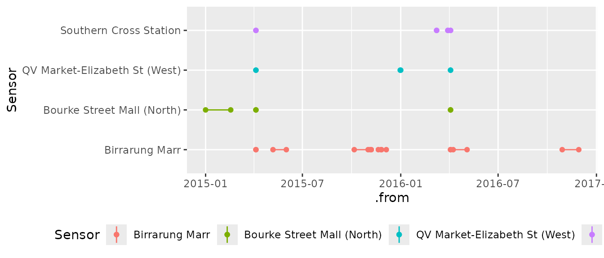

implicit-na.RmdAssuming you have set up a tsibble, you are ready for undertaking analysis in temporal context. Many time operations, such as lag and lead, assume an intact vector input ordered in time. To avoid inviting these errors into the analysis, it is a good practice to inspect any implicit missingness of the tsibble before analysis. A handful of tools are provided to understand and tackle missing values in: (1) has_gaps() checks if there exists implicit missingness; (2) scan_gaps() reports all implicit missing entries; (3) count_gaps() summarises the time ranges that are absent from the data; (4) fill_gaps() turns them into explicit ones, along with imputing by values or functions. These functions have a common argument .full. If FALSE (default) looks into the time period for each key, otherwise the full-length time span. The pedestrian data contains hourly tallies of pedestrians at four counting sensors in 2015 and 2016 in inner Melbourne.
#> # A tsibble: 66,037 x 5 [1h] <Australia/Melbourne>
#> # Key: Sensor [4]
#> Sensor Date_Time Date Time Count
#> <chr> <dttm> <date> <int> <int>
#> 1 Birrarung Marr 2015-01-01 00:00:00 2015-01-01 0 1630
#> 2 Birrarung Marr 2015-01-01 01:00:00 2015-01-01 1 826
#> 3 Birrarung Marr 2015-01-01 02:00:00 2015-01-01 2 567
#> 4 Birrarung Marr 2015-01-01 03:00:00 2015-01-01 3 264
#> 5 Birrarung Marr 2015-01-01 04:00:00 2015-01-01 4 139
#> # … with 6.603e+04 more rowsIndeed each sensor has gaps in time.
#> # A tibble: 4 x 2
#> Sensor .gaps
#> <chr> <lgl>
#> 1 Birrarung Marr TRUE
#> 2 Bourke Street Mall (North) TRUE
#> 3 QV Market-Elizabeth St (West) TRUE
#> 4 Southern Cross Station TRUESo where are these gaps? scan_gaps() gives a detailed report of missing observations. count_gaps() presents a summarised table about the individual time gap alongside the number of missing observations for each key. It is clear that Birrarung Marr exhibits many chunks of missingness, while Bourke Street Mall (North) displays as many consecutive missingness as 1128. If .full = FALSE, the opening gap for Bourke Street Mall (North) will not be recognised.
#> # A tibble: 19 x 4
#> Sensor .from .to .n
#> <chr> <dttm> <dttm> <int>
#> 1 Birrarung Marr 2015-04-05 02:00:00 2015-04-05 02:00:00 1
#> 2 Birrarung Marr 2015-05-07 00:00:00 2015-05-31 23:00:00 600
#> 3 Birrarung Marr 2015-10-06 00:00:00 2015-10-31 23:00:00 624
#> 4 Birrarung Marr 2015-11-05 00:00:00 2015-11-06 23:00:00 48
#> 5 Birrarung Marr 2015-11-20 00:00:00 2015-11-24 23:00:00 120
#> 6 Birrarung Marr 2015-11-26 00:00:00 2015-12-04 23:00:00 216
#> 7 Birrarung Marr 2016-04-03 02:00:00 2016-04-03 02:00:00 1
#> 8 Birrarung Marr 2016-04-08 00:00:00 2016-05-03 23:00:00 624
#> 9 Birrarung Marr 2016-10-29 00:00:00 2016-11-28 23:00:00 744
#> 10 Bourke Street Mall (North) 2015-01-01 00:00:00 2015-02-16 23:00:00 1128
#> 11 Bourke Street Mall (North) 2015-04-05 02:00:00 2015-04-05 02:00:00 1
#> 12 Bourke Street Mall (North) 2016-04-03 02:00:00 2016-04-03 02:00:00 1
#> 13 QV Market-Elizabeth St (W… 2015-04-05 02:00:00 2015-04-05 02:00:00 1
#> 14 QV Market-Elizabeth St (W… 2015-12-31 00:00:00 2015-12-31 23:00:00 24
#> 15 QV Market-Elizabeth St (W… 2016-04-03 02:00:00 2016-04-03 02:00:00 1
#> 16 Southern Cross Station 2015-04-05 02:00:00 2015-04-05 02:00:00 1
#> 17 Southern Cross Station 2016-03-08 02:00:00 2016-03-08 02:00:00 1
#> 18 Southern Cross Station 2016-03-29 02:00:00 2016-03-29 03:00:00 2
#> 19 Southern Cross Station 2016-04-03 02:00:00 2016-04-03 02:00:00 1These gaps can be visually presented using ggplot2 as follows. There are two points popping out to us at all sensors, probably due to the fact that the system skipped the extra hour when switching from daylight savings to standard time.
library(ggplot2)
ggplot(ped_gaps, aes(x = Sensor, colour = Sensor)) +
geom_linerange(aes(ymin = .from, ymax = .to)) +
geom_point(aes(y = .from)) +
geom_point(aes(y = .to)) +
coord_flip() +
theme(legend.position = "bottom")
We have learned if any missing periods and where, and we enlarge the tsibble to include explicit NA (previously as implicit missingness). The function fill_gaps() takes care of filling the key and index, and leaves other variables filled by the default NA. The pedestrian data initially contains 66037 and gets augmented to 70176.
#> # A tsibble: 70,176 x 5 [1h] <Australia/Melbourne>
#> # Key: Sensor [4]
#> Sensor Date_Time Date Time Count
#> <chr> <dttm> <date> <int> <int>
#> 1 Birrarung Marr 2015-01-01 00:00:00 2015-01-01 0 1630
#> 2 Birrarung Marr 2015-01-01 01:00:00 2015-01-01 1 826
#> 3 Birrarung Marr 2015-01-01 02:00:00 2015-01-01 2 567
#> 4 Birrarung Marr 2015-01-01 03:00:00 2015-01-01 3 264
#> 5 Birrarung Marr 2015-01-01 04:00:00 2015-01-01 4 139
#> # … with 7.017e+04 more rowsOther than NA, a set of name-value pairs goes along with fill_gaps(), by imputing values or functions as desired.